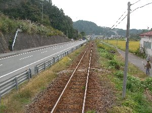
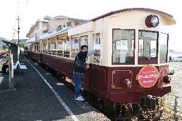

天浜線にのろうよ | ２００５年１０月 |
|---|---|
| 元国鉄天竜二俣線が、新たに「天竜浜名湖鉄道」として生まれ変わり、それ以来観光列車としてこの1両電車が人気になったのです。 掛川-新所原間は全長67km。 駅数は37駅 AM8:55に静岡駅を東海道本線にて出発するため、私と麻蔵（仮名）・上坂（仮名）の3人が集合。伊井田（仮名）は「行けたら行く」と言う伝言だったので、集合場所に姿が見えないところを見ると、今回は参加断念したらしい。 発車のベルが鳴り響くときに、伊井田から「もう、電車乗る？今、改札だけど」と携帯に掛かってきた。後から聞いた話では、伊井田は早くから来ていたのだが、腹具合が悪く、トイレの住人になっていて遅れたらしい。当然間に合わない。伊井田は一本後の列車に乗ることとなった。 掛川に着いて、天浜線の一日フリー切符（1,800円）を購入。10:04発の天竜二股行きに乗り込む。伊井田もギリギリで間に合った。 | |
|  見ての通り単線で、上に電線無し！ |  鉄ちゃん（鉄道マニア）の上坂（仮名） が、トロッコ列車の運転席を撮れと、騒いでいる。 |
| 列車は一両編成のディーゼルカー。電化されていない天浜線は、列車自体がエンジンを積み込み走らねばならない。昔、鹿児島でそんな列車は沢山乗ったが、天浜線の車両はすごくきれい！ イスもふかふかだし、照明も明るい。乗った車両が良かったのか？ 一両編成だと、前の景色も後ろの景色も見ることが出来る。上に電線が無いので、なにかスッキリした景色が広がるのである。単線なので、窓の外は両側とも、草木だったりして、狭い路地を抜けて行く様な錯覚に落としいれられる。 この辺は、車で走ったことがあるから、景色に見覚えがある。建物の間を縫って行く様な路線では無いので、気持ちがいい。 天竜二股まで一気に来て、ココで一日一往復のトロッコ列車に乗り換える。トロッコ列車は別途400円掛かるが、窓が無く屋根を支える柱だけの、まるでオープンカーの様な開放感のある車両だ！ イスは木製で、シートには何も張られていないから、ちょっと痛いかな。あまり気にはならなかったが。 トロッコは普通の車両より遅く走っていると思う。あまり早く走ると風がキツイからか？ 上坂が、「これはトレーラーだからね。ココにＴって書いてあるでしょ。後ろの一両だけ動力車で、前の2両を押してるんだよ。重いからスピード出ないじゃないかな？」と鉄ちゃんらしい発言をして、執拗に「ココのプレートを撮れ」だの、「運転席を撮れ」と言っていた。もちろん運転士の一挙一動まで意見を述べる。まあ、こうまでしなければ鉄ちゃんは名乗れない。 トロッコ列車は、大変気持ちがよくて、時期的には良い時に乗りました。夏だと暑いだろうし、冬は寒いんじゃないかな。今日だって、風がちょっと寒いしね。でも、周り全部に景色が広がるので楽しい♪ 伊井田＆上坂は、列車の旅を良い事にビールを飲みだす。 | |
 トロッコ列車内 爽快です |  コレはトンネルか？！ |
| 12:05に三ケ日到着。トロッコはココまで。終点の新所原までは、20分後の列車に乗換えだ。ココでトイレ休憩と写真撮影のため、駅を出たり入ったり、皆でフラフラしていた。 乗り換えの列車がホームに入ってくると、向かえのホームに伊井田が見える。なるほど、反対側から良い絵を撮ろうと、待ち構えていたのか。 列車に乗り込み出発を待っていたが、なかなか伊井田が来ない。今度の車両は新しく、窓が開かないタイプなので、呼ぶことも出来ない。ホームの端っこに伊井田が歩いてくるのが見えると、「やれやれ・・」と、思った瞬間、プシュ〜〜とドアは無情にも閉じられ、プァッ〜ン！ と警笛を鳴らし出発してしまった！ 窓越しに伊井田が「何で！？ この列車に乗るの？？」みたいな、口を尖らせ、驚きとも照れ隠しとも取れる、苦笑いをしている。他の乗客が「あ、乗り遅れっ・・（笑）」と言う、つぶやきが聞こえた。 乗り遅れた伊井田を、ネタと称して笑い、我々3人は新所原駅に到着。12:37分。 良い飯時です。ここで、駅内にあるウナギ屋「やまなし」でウナ丼を頂く。駅と同じ建物だが、駅を一回出て店内に入ると、狭いながらも食事をするスペースがある。 メニューはウナ丼のみだが（キモとかも有るよ）、4段階に値段がわかれ、私は1,260円（下から二番目）のお勧めを頂く。店内に「当店は中国産、台湾産のウナギは使っていません」と書かれていた。ウナギはふっくらとして美味しかった。これで1,260円なら安いだろう。店主曰く、「今の時期が一番美味しいよ」。 腹が満腹になったのに、コンビニでビールとつまみを買い、掛川に戻るため14:07の列車に乗り込む。乗り遅れた伊井田は、三ケ日で一人飯を食べ、そこで合流する手筈になっていた。（列車は一時間に一本位なので、直ぐには追いつけない） が、暇をもてあましたのか、二駅手前の尾奈で、伊井田が乗り込んできた。どうやら歩いてきたらしい。 | |
 三ヶ日駅にて |  新所原駅内のウナギやさん |
| 帰りの行程は、二箇所ぐらい途中下車してゆっくり行こう！だった。 最初の途中下車は西鹿島駅。一時間の待ち時間を、駅周辺をフラリフラリして、駅前でクリーム大判焼きを食べた。次の途中下車は遠州森町駅。既に16:32．だいぶ日が傾いてきて、哀愁漂う良い感じになってきていた。う〜〜ん、田舎って感じが出てて良いね〜 どっぷり疲れ、掛川に向かう列車では、夕焼けを見ながら瞼が重くなってきた。 ふと、気がつくと、駅に停車している。どこかな〜〜と見渡すが、イマイチ駅名が見えない。目の前の席には麻蔵が眠りこけている。後ろの席に居るはずの、伊井田と上坂に声を掛けようと振り返ったら、居ない！！ あ、ここ終点掛川だ！ 急いで麻蔵を起こし降りようとしたら、プシュ〜〜とドアは、又も無情にも閉じてしまった。やられた！ 天竜二股に引き返す列車の中で、「上坂達は、わざと声を掛けずに降りたな！ 今頃ホームで笑っていることだろう！」 と考えたが、出てしまったのはしょうがない。次の駅で引き返すとしよう。列車が早く来れば良いが・・・(『時刻表を見る）おおっ、２０分位で来るじゃない！ しかし、麻蔵は駅に着くと「歩いていこう」と言い出し、掛川の知らない道を、たぶん駅方面へと歩く羽目になる。（1.3キロだしね）暗い道を、「あ、ココのお好み焼き屋、来たことある」等と思いながら掛川駅に向かった。 その後、上坂達とは、静岡駅で合流したが、どうやら同じ列車に乗っていたらしい。一応気にしてか、一本列車を待っていてくれたようである。 久々に一日中列車に揺られる旅となったが、やはり友達とこんな旅は楽しいね。ビールも飲めるしね。もっとローカル線はないかな？ | |
 夕闇迫る遠州森町駅 |  最後に白黒写真を |
| 天竜浜名湖線をいつもご利用の皆様、駅周辺の皆様、ローカル＆田舎を連呼して申し訳ございません。しかし、とても環境に良い所にお住まいですね。 | |
| コメント＆写真 ｂｙ べっしー | |